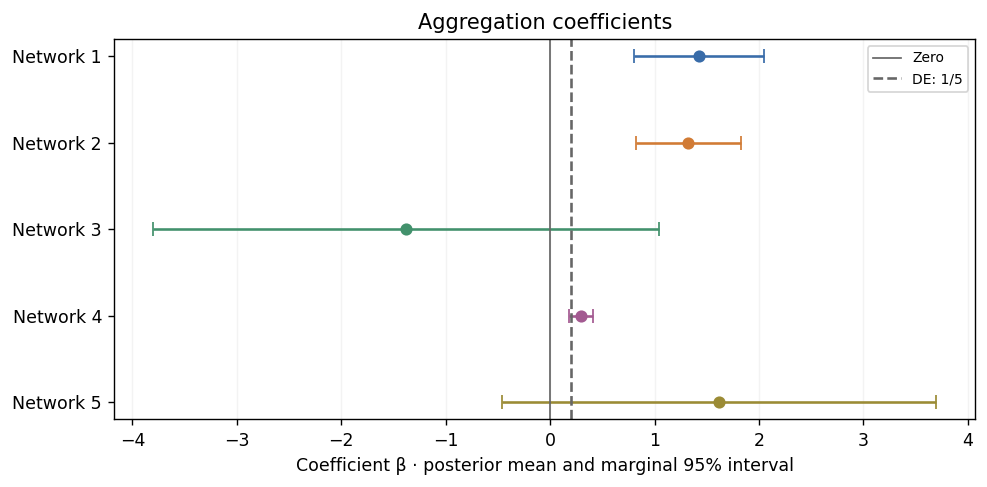
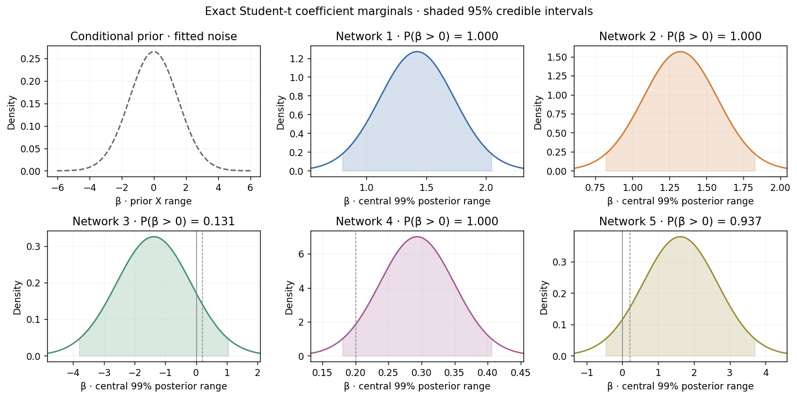
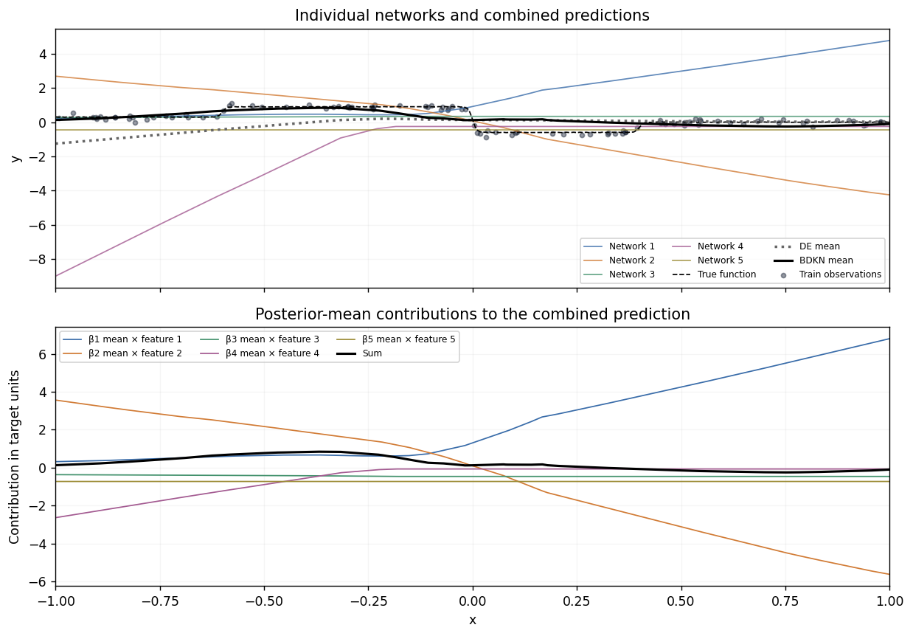
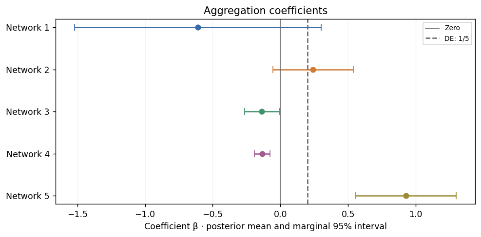
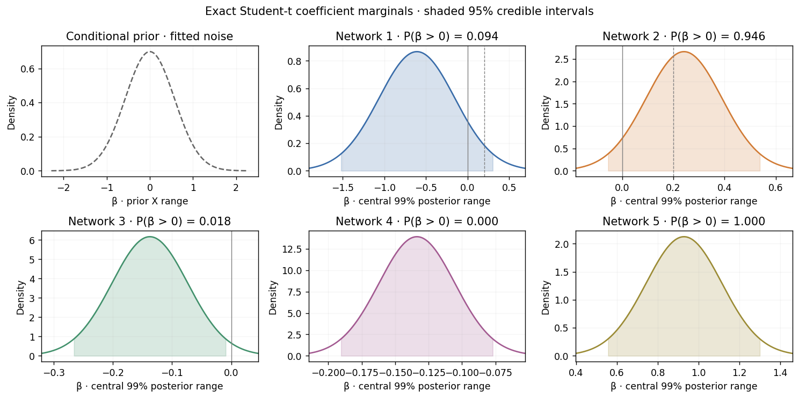
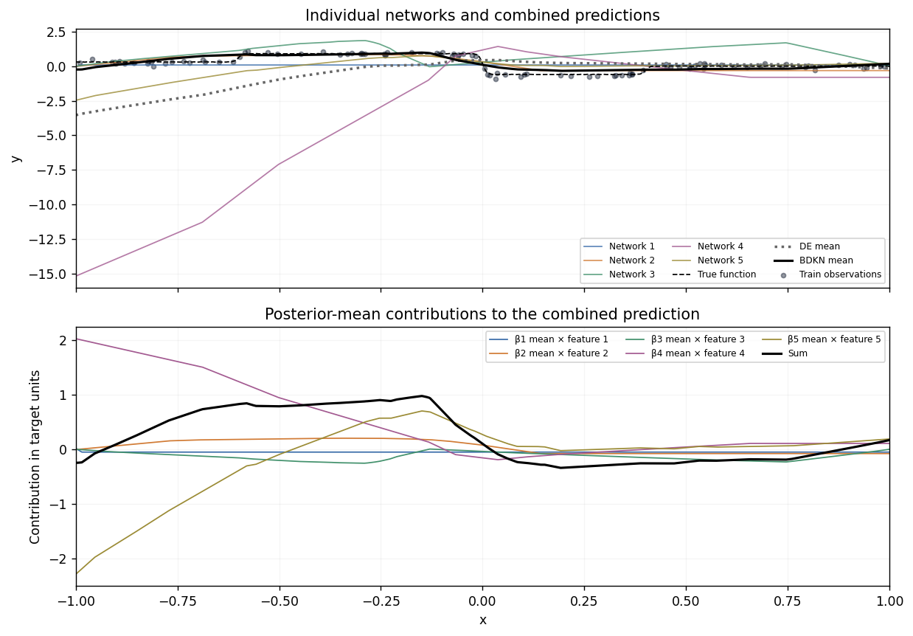
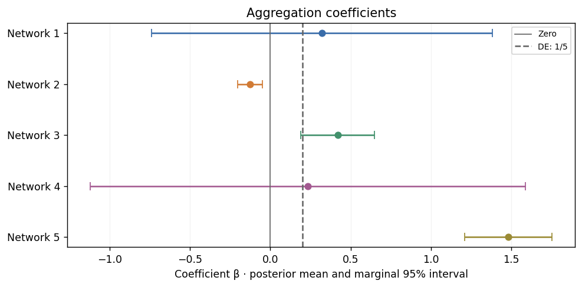
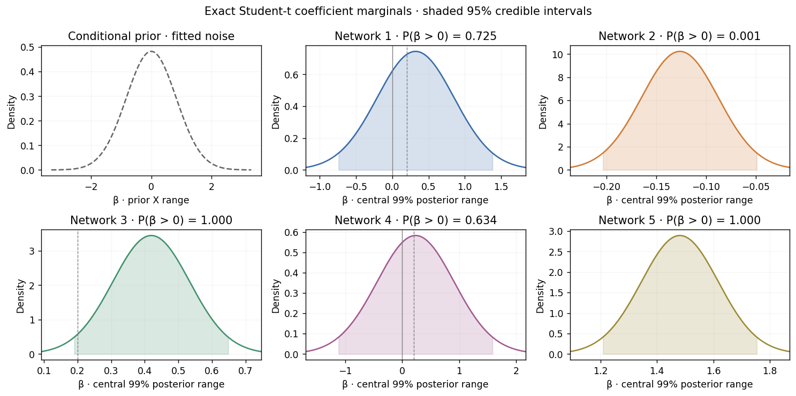
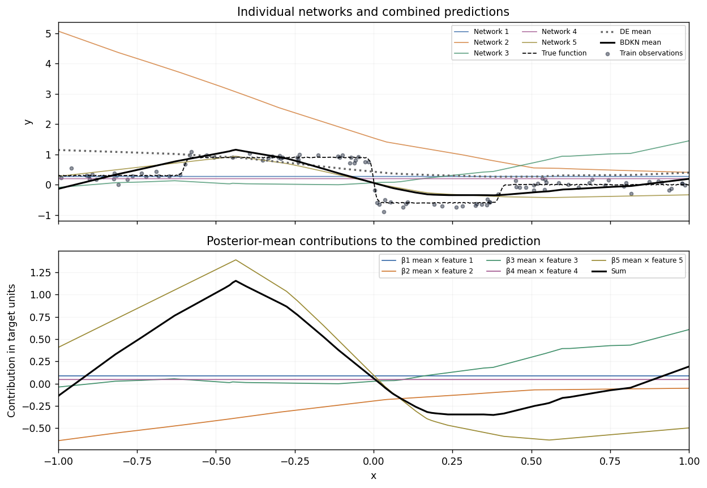

Regression comparison
Download resultsAggregation weights
Coefficients can be negative and need not sum to one. Intervals describe coefficient uncertainty; the dashed reference is DE’s fixed 1/H weight.
BDKN


Each density panel uses its own X range for readability; coefficient intervals above share a common axis. Prior reference conditions on fitted noise. Contribution shares use held-out inputs; test targets are used only for scoring.
| Network | β mean | 95% low | 95% high | P(β > 0) | Contribution share | Test RMSE | Test NLL |
|---|---|---|---|---|---|---|---|
| 1 | 0.07974 | -0.37819 | 0.53766 | 0.63477 | 0.01004 | 0.47907 | 1.01693 |
| 2 | -0.07102 | -0.09714 | -0.04489 | 0.00000 | 0.24858 | 5.51114 | 2.71606 |
| 3 | 1.27983 | 0.98874 | 1.57093 | 1.00000 | 0.65958 | 0.37050 | 0.43076 |
| 4 | -0.15258 | -0.60718 | 0.30203 | 0.25351 | 0.04110 | 0.41957 | 1.01608 |
| 5 | -0.10384 | -0.52756 | 0.31987 | 0.31393 | 0.04070 | 0.38982 | 0.57439 |
Functional repulsion · BDKN



Each density panel uses its own X range for readability; coefficient intervals above share a common axis. Prior reference conditions on fitted noise. Contribution shares use held-out inputs; test targets are used only for scoring.
| Network | β mean | 95% low | 95% high | P(β > 0) | Contribution share | Test RMSE | Test NLL |
|---|---|---|---|---|---|---|---|
| 1 | 1.42328 | 0.80161 | 2.04495 | 0.99999 | 0.36926 | 2.41738 | 1.50831 |
| 2 | 1.32404 | 0.82020 | 1.82787 | 1.00000 | 0.38213 | 2.06421 | 1.92764 |
| 3 | -1.37827 | -3.79962 | 1.04308 | 0.13073 | 0.06524 | 0.55633 | 0.78470 |
| 4 | 0.29320 | 0.18049 | 0.40592 | 1.00000 | 0.07612 | 3.35068 | 1.74363 |
| 5 | 1.61810 | -0.46214 | 3.69833 | 0.93703 | 0.10725 | 0.84476 | 1.27595 |
Weight repulsion · BDKN



Each density panel uses its own X range for readability; coefficient intervals above share a common axis. Prior reference conditions on fitted noise. Contribution shares use held-out inputs; test targets are used only for scoring.
| Network | β mean | 95% low | 95% high | P(β > 0) | Contribution share | Test RMSE | Test NLL |
|---|---|---|---|---|---|---|---|
| 1 | -0.60858 | -1.51913 | 0.30198 | 0.09393 | 0.04263 | 0.54714 | 0.97659 |
| 2 | 0.24167 | -0.05465 | 0.53798 | 0.94560 | 0.09461 | 0.31796 | 0.81810 |
| 3 | -0.13752 | -0.26551 | -0.00953 | 0.01774 | 0.11271 | 1.03094 | 1.57385 |
| 4 | -0.13371 | -0.19041 | -0.07701 | 0.00000 | 0.43363 | 6.38064 | 3.25888 |
| 5 | 0.92806 | 0.55671 | 1.29940 | 1.00000 | 0.31642 | 0.89507 | 1.39755 |
First-order repulsion · BDKN



Each density panel uses its own X range for readability; coefficient intervals above share a common axis. Prior reference conditions on fitted noise. Contribution shares use held-out inputs; test targets are used only for scoring.
| Network | β mean | 95% low | 95% high | P(β > 0) | Contribution share | Test RMSE | Test NLL |
|---|---|---|---|---|---|---|---|
| 1 | 0.32091 | -0.73987 | 1.38169 | 0.72513 | 0.07169 | 0.53870 | 0.80107 |
| 2 | -0.12622 | -0.20333 | -0.04911 | 0.00079 | 0.20234 | 2.16666 | 1.97712 |
| 3 | 0.41927 | 0.19004 | 0.64850 | 0.99977 | 0.13387 | 0.83889 | 1.31825 |
| 4 | 0.23421 | -1.11920 | 1.58762 | 0.63396 | 0.03819 | 0.53412 | 0.88964 |
| 5 | 1.48129 | 1.20833 | 1.75425 | 1.00000 | 0.55392 | 0.36314 | 0.51391 |